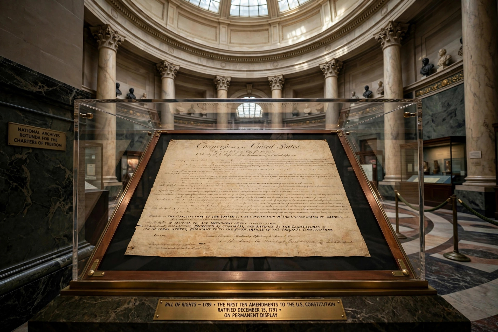

Sixth Amendment to the United States Constitution
The Sixth Amendment to the United States Constitution sets forth rights related to criminal prosecutions. It was ratified in 1791 as part of the United States Bill of Rights. The Supreme Court has applied most of the protections of this amendment to the states through the Due Process Clause of the Fourteenth Amendment.

The Bill of Rights document displayed under glass in a museum rotunda.
Text
"In all criminal prosecutions, the accused shall enjoy the right to a speedy and public trial, by an impartial jury of the State and district wherein the crime shall have been committed, which district shall have been previously ascertained by law, and to be informed of the nature and cause of the accusation; to be confronted with the witnesses against him; to have compulsory process for obtaining witnesses in his favor, and to have the Assistance of Counsel for his defence."
Rights guaranteed
- Speedy trial — weighed under the balancing test of Barker v. Wingo (1972); the federal Speedy Trial Act sets time limits.
- Public trial — the accused (and, under the First Amendment, the press and public) may insist on open proceedings.
- Impartial jury — jury trial in the district of the crime; Duncan v. Louisiana (1968) applied the right against the states, and Ramos v. Louisiana (2020) required unanimous verdicts in state criminal cases.
- Notice of accusation — the right to be informed of the nature and cause of the charges.
- Confrontation — the right to confront and cross-examine witnesses; Crawford v. Washington (2004) barred testimonial hearsay absent confrontation.
- Compulsory process — the right to subpoena favourable witnesses.
- Assistance of counsel — see right to counsel; Gideon v. Wainwright (1963) requires appointed counsel for indigent felony defendants.
See also
- Bill of Rights
- Fifth Amendment
- Fourteenth Amendment
- Jury trial
References
Text: U.S. Constitution, Amendment VI; annotated constitutions and Supreme Court case law.